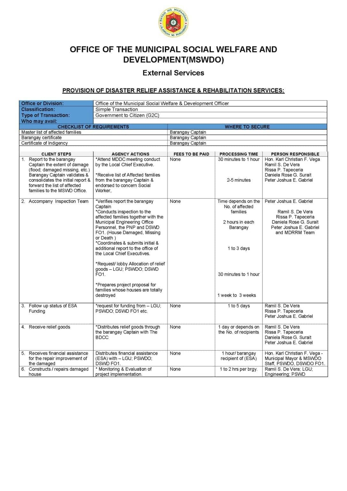

Description
The MSWDO provides disaster relief assistance and rehabilitation services to families affected by floods, typhoons, fires, and other calamities. The service includes verification of affected families, distribution of relief goods through the Barangay Captain with the BDCC, and financial assistance (ESA) for families whose houses are totally destroyed. The MSWDO coordinates with the LGU, PSWDO, and DSWD Field Office I.
Requirements
- Master list of affected families (from Barangay Captain)
- Barangay certificate
- Certificate of Indigency
Procedure
- Report to the Barangay Captain the extent of damage. The Captain validates and forwards the list to MSWDO.
- MSWDO attends MDDC meeting conducted by the Local Chief Executive.
- MSWDO receives list of affected families and endorses to concerned social worker.
- Verification and inspection team (with Engineering, PNP, DSWD) assesses the damage.
- MSWDO requests and lobbies for allocation of relief goods from LGU, PSWDO, DSWD FO1.
- Distribution of relief goods through the Barangay Captain with the BDCC.
- For totally destroyed houses, MSWDO prepares project proposal for ESA funding.
- Financial assistance (ESA) is distributed to qualified beneficiaries.
- MSWDO monitors and evaluates project implementation for house repair/reconstruction.
Scanned Document
Scanned page from the official Mapandan Citizen's Charter listing the requirements, fees, processing time, and responsible staff for the service.
